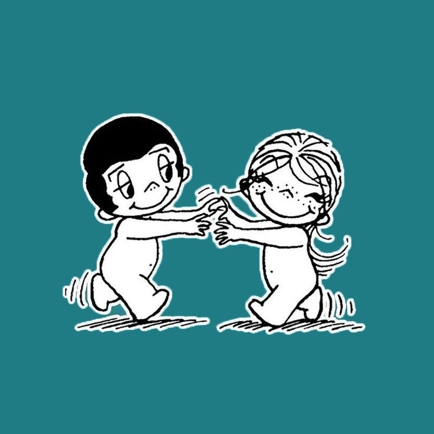

Место, где встречаются таланты и ценители
Отбираем лучшее для клиетов
Специализированный "нишевый" маркетплейс подарков
Делаем продажи для мастеров
опыта основателя в нише
Ищем поддержку и инвестиции для запуска, маркетинга и масштабирования
mimimi.by